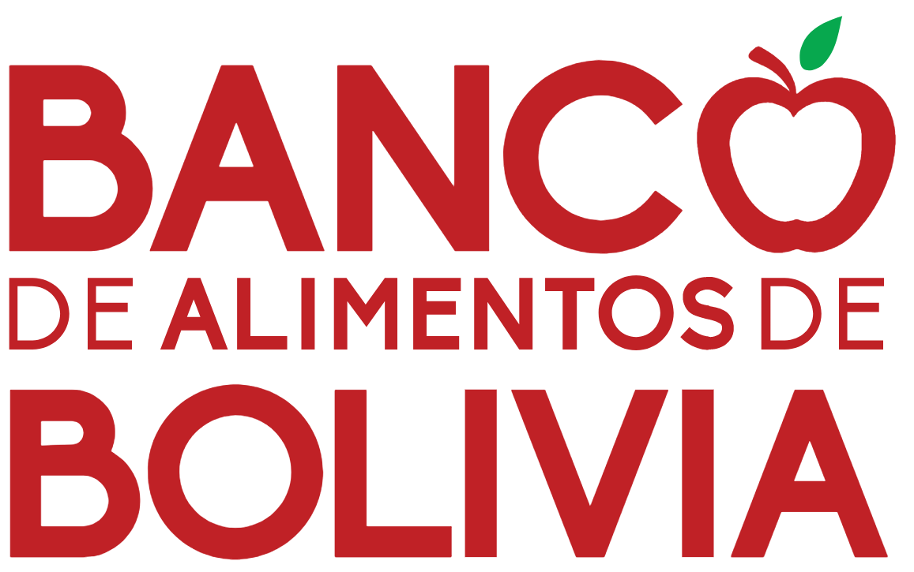

<div class="pusher">
  <div class="container">

    <div>
      
    </div>
    <div>
          <p class="volunteer">
            Si eres voluntario, por favor Inicia sesión con las credenciales proporcionadas por
            la administradora del Programa Semillas
          </p>
    </div>
    <div *ngIf="!loggedIn">
      <button
        (click)="signInWithGoogle()"
        class="login-button"
        mat-stroked-button color="primary"> INICIAR SESIÓN
        <mat-icon>supervisor_account</mat-icon>
      </button>
    </div>

  </div>

</div>
